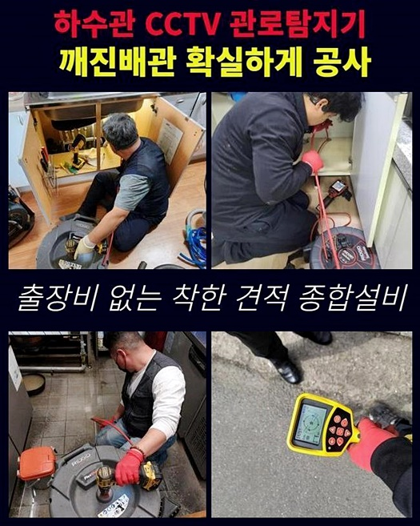
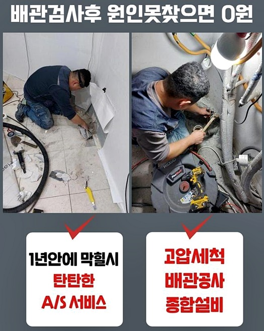
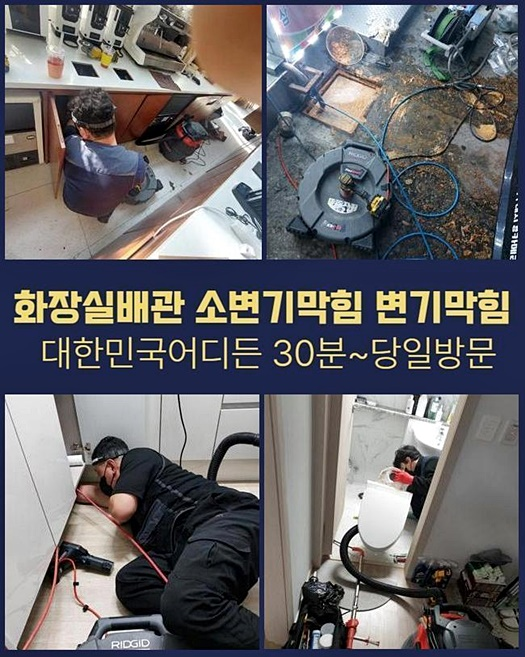
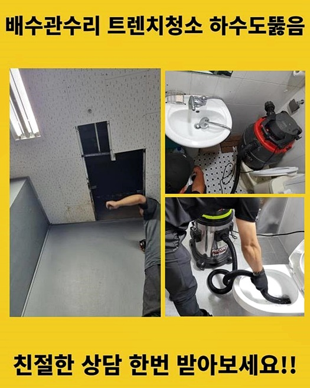
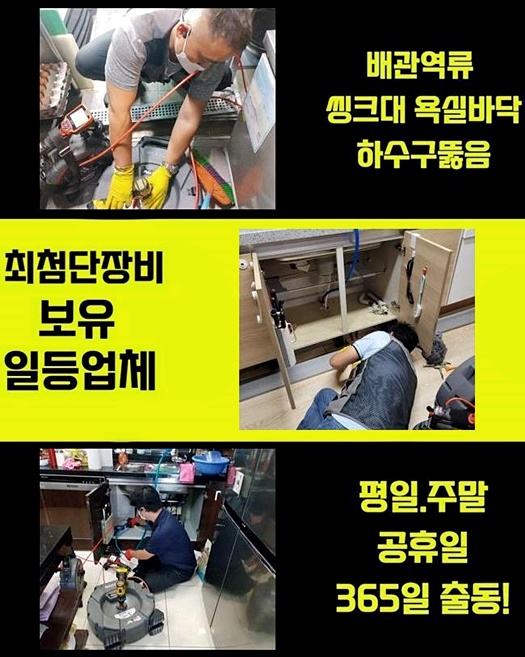
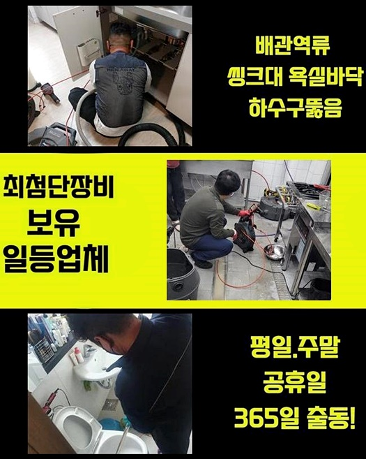
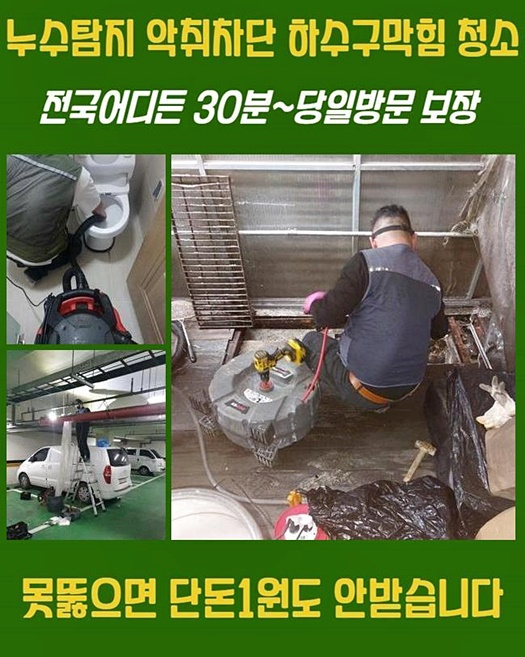

🏠 신장동씽크대뚫음 갈곶동 하수구청소장비 배관전문
용인시 처인구 배관막힘 전문 시공 후기

📋 작업 개요
- 위치: 용인시 처인구, 수원시 영통구, 화성시 동탄
- 서비스 유형: 배관막힘, 하수구청소, 누수수리, 배관수리, 고압세척, 내시경점검
- 작업 일시:
- 업체명: 하수구수사대 (010-5615-2118)
🔍 문제 상황
신장동씽크대뚫음 갈곶동 하수구청소장비 배관전문
금일은 하수관이 꽉 막혀 힘들어하셨던 고객분들의 소식을 들려드리려고해요
구축 아파트에서 배수관이 막히게 되어 물빠짐이 안되는 현상에 놓였던 고객님께서는 본인이 가지고 있는 기다란 물건으로 사태를 해결하려 했지만 도리어 사태를 좋지 않게 만들었어요
베테랑이 배수관을 꼼꼼히 진단을 해보니 꺾인 배관이 이물질로 가득차서 배수가 원만하게 되지 않은걸로 관찰되었습니다
천만다행으로 한 고객분의 집에는 누수는 없었는데요, 배수고민을 수리하긴 힘든 상태였기 때문에 경력자의 노하우가 필요한 순간이었죠
점심 시간쯤에 전화를 하셔서 즉시 속히 방문해서 문의자와 상담을 나누게 되었습니다
그간의 상황에 대해 다양한 스토리를 들었는데, 배수관이 막힌 것이 문제로 보여졌습니다
저희팀은 자세한 설명과 이유를 찾기 위해서 적극적으로 스토리를 경청하였고 정보를 파악하여 해결책을 모색하기위해 집중합니다
그결과 우리들은 이런 사례들을 기초로 하여 꾸준히 성장합니다
더욱이 하수관의 해결책을 찾는데는 장비 사용이 아주 중요하게 작용합니다
저희들은 내시경카메라와 흡입기로 잘 알려진 첨단기술 기기를 가지고 있어서 경쟁 우위를 갖고 있어요
세제를 지속적으로 사용했지만 배수가 안되어 불편을겪었다 합니다
배수가 안되는 현장을 방문드려 조사해보니 해당 현장의 공동배관 중간이 막힌 상태였습니다

🔎 원인 분석
💡 전문가 진단: 정밀 진단 장비를 사용하여 슬러지의 고착 여부를 판명하고 타격/세척 작업을 실시했습니다.
함께 쓰는 배관의 경우는 지름이 크며 상당히 넓은편이어서 막혀있는 곳을 큰 제거하기는 까다로운 일이었습니다
그렇기 때문에 강한압력으로 세척을 실시해 드렸어요
강력한 물세척을 하고 나니 물빠짐이 수월해졌고 큰 이슈도 나타나지 않았어요
본 건물은 여러가정이 공동으로 사용하고 있는 형태이므로 한 집만이 아니라 다수의 가구에 동일한 이슈가 발견되는 경우가 많이 발생합니다
이럴 때는 배관이 연결되는 곳에서 해결해야 하는 것이죠
많은 가정이 함께 이용하고 있는 하수관은 주기적으로 청소와 관리를 수행하는 일이 필수적입니다
더욱이 해당 매장이 입점한 건물에서는 영향을 받은 인근 매장들이 많이 있었습니다
인근 가게들은 수도를 사용할 수 없다보니 영업 활동에 불편함을 겪었고 같은 층에 위치한 남자 화장실 역시 하수파이프가 막혀 사용불가한 상태였습니다
이런 상황은 매장운영을 할 때 즉각적으로 영향을 미치므로 신속히 처리들이 필수적이었습니다 하수구가 막힌 원인은 건축물의 건축구조와 외부적 요인과 같은 다양한 변수로 나타납니다
이런 이유로 원인 파악시에는 여러가지 부분을 생각해야 하죠
저희 업체는 신속히 막힘의 주요한 원인을 파악했습니다
매장의 바닥에 있는 배관이 이번 현장의 주요 원인이었죠
그런데 하수관에서 확인하는 것이 복잡해서 첫 시도에는 감지하기 힘들었습니다

🔧 작업 과정
배관 고압 청소 서비스를 실시하려고 기계를 준비했으나 찌꺼기들이 상당량 축적된 상태였습니다
그렇기 때문에 다른 방식의 대책이 요구됩니다
전문인는 의뢰자분의 고민을 돕기 위해 성공적으로 애쓰고 있습니다
근래엔 근방에서 막혀있는 배수관을 개선하기 위해 강한 수압으로 청소를 진행해드렸습니다
이물질들을 완전히 내보내기위해 강한 압력을 활용하여 배관에 손상없이 철저하게 배수문제상황을 극복했습니다
수리가 난해하여 어려웠지만 베테랑인 들은 빠르며 정밀하게 진행해드렸습니다
한 세대뿐만 아니라 다른집의 문제 또한 한번에 처리되어서 많은 사람들의 충족을 이끌어낼 수 있었습니다
하수관에 알맞게 하수구를 세척하고 최적화된 상태를 보존하기 위해 노력을 기울입니다
이용자분들의 만족도 향상을 위해 언제라도 빠르고 안전한 해답을 드리겠습니다
배관에 무언가가 들어갔을 때 관통장치를 적용하여 막혀있는 물체를 제거하는 방법을 채택할 수 있습니다
그러나 방문드려 살펴본 결과 물빠짐이 되지않고 사실상는 물이 차올라 하수배관에 이상이 생겼을 소지가 상당한것으로 파악되었습니다
그러니까 티슈등이 아닌 오수 파이프 자체에 이상이 있는 것으로 확인되어 이웃 집에서도 같은 현상이 생기는지 파악해 나가려고 관리사무실과 소통하여 상세히 점검을 실행했습니다
결정적으로 몇몇 가구에서 배수관의 물이 잘 차오르는 이슈가 확인되어 중앙 하수관을 따라서 확인해보니 현장에 있는 오수관에 문제점들이 생기고 있음을 확인하였습니다
이 결과 따라 이웃분들을 모아 세부사항을 고지하고 신속히 장비를 가져와 불편사항을 극복하도록 실행했습니다
배수 불량의 장애들이 개선되어 의뢰인의 불편을 없앨 수 있었어요
고객님에게도 이런 상태에 대해 알려드렸습니다
고객님께서는 배관에서 하수관 막힘이 발생한 것을 조금도 예상하지 못했다고 알려주셨습니다
해당 사례처럼 배관 막힘 현상은 기술자가 아니라면 처리하기가 쉽지 않습니다
비전문가는 문제 해결이 쉽지 않습니다
그러나 저희들은 다년간 근무한 숙련자들로 이루어져 있으므로 모든 배수관을 완벽히 수리합니다
의뢰인 건물에 방문한 전문 인력들도 다년간의 경험을 소유한 검증된 전문가입니다


✅ 작업 완료
저희의 기술자들은 이처럼 경험많은 기술자로 꾸려져있습니다
그렇기 때문에 상업적인 공간도 수리를 자주하지만 일반 가정집에서도 하수관 막힘 현상을 늘 해결했습니다
배수가 안되는 환경에선 강한 청소약품이나 자나 막대기 같은 공구를 사용해서 불편함을 해결하고자 하는 노력은 현장의는 하수관에 파손 위험을 유발할 수 있기 때문에 신중함이 필요합니다
따라서 배관이 막혔다면 즉시 베테랑에게 연락하여 진단을 받는것이 필수적입니다
저희 업체는 의뢰인의 문제상황을 전문적이며 신속하게 해결해드릴 것을 약속드리겠습니다
배수문제로 힘드시다면 언제나 저희 배관 수리팀에 질문해주시기 바랍니다




⚠️ 하수구 배관 막힘 예방 및 관리 가이드
- ✅ 머리카락, 비닐, 물티슈 등 물에 분해되지 않는 이물질은 절대 흘려보내지 마세요.
- ✅ 기름기 많은 식기는 설거지 전 키친타올로 먼저 기름때를 닦아내세요.
- ✅ 주기적으로 배수구에 뜨거운 물을 가득 부어주어 유지방 고착을 방지하세요.
- ✅ 작업 후 1년 이내 재발 시 무상 A/S 보증 서비스를 제공합니다.
💡 핵심 정리
- 확실한 장비 작업(내시경 점검 및 샤프트 스케일링)으로 원인을 뿌리 뽑습니다.
- 작업 후 1년 이내에 동일한 부위 재발 시 100% 무상 A/S 서비스를 보장합니다.
- 서울 · 경기 · 인천 전 지역에 24시간 언제든 긴급 출동할 수 있도록 항시 대기 중입니다.
❓ 자주 묻는 질문 (FAQ)
🚨 용인시 처인구 배관막힘 문제로 고민이신가요?
정확한 원인 진단과 확실한 시공으로 재발 없는 해결을 약속드립니다.
24시간 긴급 출동 | 서울 · 경기 · 인천 전지역 | 1년 내 재발 시 무상 A/S